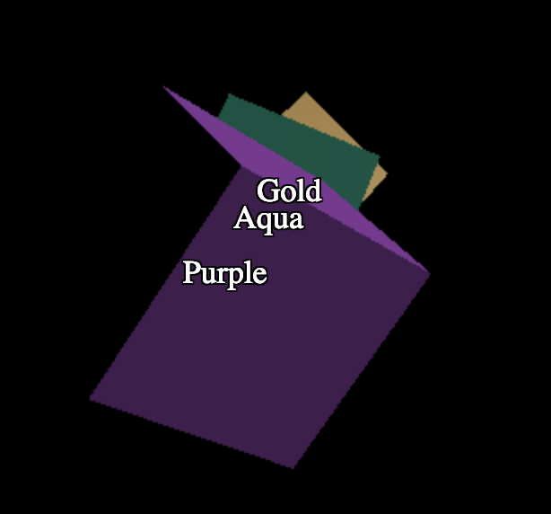
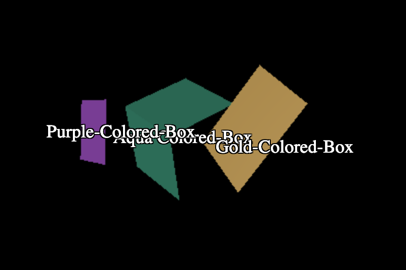
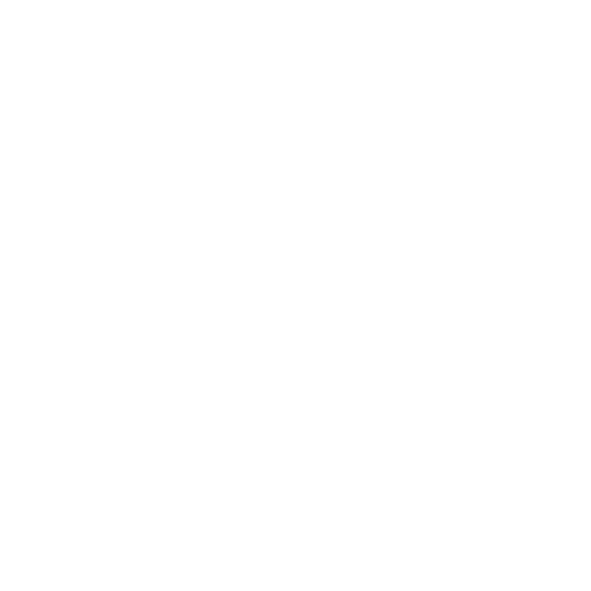

本文是有关 Three.js 的系列文章的一部分。第一篇文章 是three.js 基础知识。如果你还没有读过 然而，如果您是 Three.js 的新手，您可能需要考虑从那里开始。
有时您想在 3D 场景中显示一些文本。你有很多选择 每个都有优点和缺点。
使用 3D 文本
如果您查看基元文章，您会看到TextGeometry
制作 3D 文本。这可能对飞行徽标有用，但对统计、信息、
或标记很多东西。
使用绘制有 2D 文本的纹理。
关于使用画布作为纹理的文章显示了使用 画布作为纹理。您可以将文本绘制到画布中并将其显示为广告牌。 这里的优点可能是文本被集成到 3D 场景中。对于像计算机终端之类的东西 在 3D 场景中显示，这可能是完美的。
使用 HTML 元素并将它们定位以匹配 3D
这种方法的好处是您可以使用所有 HTML。您的 HTML 可以有多个元素。它可以 通过 CSS 设计样式。它也可以由用户选择，因为它是实际文本。
本文将介绍最后一种方法。
让我们从简单的开始。我们将使用一些图元创建一个 3D 场景，然后为每个图元添加一个标签。我们将开始 以关于响应式页面的文章
中的示例为例，我们将添加一些OrbitControls，就像我们在关于响应式页面的文章中所做的那样lighting.
import * as THREE from 'three';
+import {OrbitControls} from 'three/addons/controls/OrbitControls.js';
const controls = new OrbitControls(camera, canvas); controls.target.set(0, 0, 0); controls.update();
我们需要提供一个 HTML 元素来包含我们的标签元素
<body> - <canvas id="c"></canvas> + <div id="container"> + <canvas id="c"></canvas> + <div id="labels"></div> + </div> </body>
通过将画布和 <div id="labels"> 放入
父容器我们可以使它们与此CSS重叠
#c {
- width: 100%;
- height: 100%;
+ width: 100%; /* let our container decide our size */
+ height: 100%;
display: block;
}
+#container {
+ position: relative; /* makes this the origin of its children */
+ width: 100%;
+ height: 100%;
+ overflow: hidden;
+}
+#labels {
+ position: absolute; /* let us position ourself inside the container */
+ left: 0; /* make our position the top left of the container */
+ top: 0;
+ color: white;
+}
让我们还为标签本身添加一些CSS
#labels>div {
position: absolute; /* let us position them inside the container */
left: 0; /* make their default position the top left of the container */
top: 0;
cursor: pointer; /* change the cursor to a hand when over us */
font-size: large;
user-select: none; /* don't let the text get selected */
text-shadow: /* create a black outline */
-1px -1px 0 #000,
0 -1px 0 #000,
1px -1px 0 #000,
1px 0 0 #000,
1px 1px 0 #000,
0 1px 0 #000,
-1px 1px 0 #000,
-1px 0 0 #000;
}
#labels>div:hover {
color: red;
}
现在我们的代码中不必添加太多。我们有一个函数
makeInstance 我们用来生成立方体。让我们来实现吧
所以它还添加了一个标签元素。
+const labelContainerElem = document.querySelector('#labels');
-function makeInstance(geometry, color, x) {
+function makeInstance(geometry, color, x, name) {
const material = new THREE.MeshPhongMaterial({color});
const cube = new THREE.Mesh(geometry, material);
scene.add(cube);
cube.position.x = x;
+ const elem = document.createElement('div');
+ elem.textContent = name;
+ labelContainerElem.appendChild(elem);
- return cube;
+ return {cube, elem};
}
如您所见，我们向容器添加了一个 <div>，每个立方体一个。我们是
还返回一个带有 cube 和 elem 标签的对象。
调用它，我们需要为每个提供一个名称
const cubes = [ - makeInstance(geometry, 0x44aa88, 0), - makeInstance(geometry, 0x8844aa, -2), - makeInstance(geometry, 0xaa8844, 2), + makeInstance(geometry, 0x44aa88, 0, 'Aqua'), + makeInstance(geometry, 0x8844aa, -2, 'Purple'), + makeInstance(geometry, 0xaa8844, 2, 'Gold'), ];
剩下的就是在渲染时定位标签元素time
const tempV = new THREE.Vector3();
...
-cubes.forEach((cube, ndx) => {
+cubes.forEach((cubeInfo, ndx) => {
+ const {cube, elem} = cubeInfo;
const speed = 1 + ndx * .1;
const rot = time * speed;
cube.rotation.x = rot;
cube.rotation.y = rot;
+ // get the position of the center of the cube
+ cube.updateWorldMatrix(true, false);
+ cube.getWorldPosition(tempV);
+
+ // get the normalized screen coordinate of that position
+ // x and y will be in the -1 to +1 range with x = -1 being
+ // on the left and y = -1 being on the bottom
+ tempV.project(camera);
+
+ // convert the normalized position to CSS coordinates
+ const x = (tempV.x * .5 + .5) * canvas.clientWidth;
+ const y = (tempV.y * -.5 + .5) * canvas.clientHeight;
+
+ // move the elem to that position
+ elem.style.transform = `translate(-50%, -50%) translate(${x}px,${y}px)`;
});
这样我们就可以将标签与其相应的对象对齐。
我们可能需要处理几个问题。
一个是如果我们旋转对象，使它们与所有标签重叠 也重叠。

另一个是，如果我们缩小，使对象向外 标签仍然会出现截锥体。
重叠对象问题的可能解决方案是使用
挑选文章中的挑选代码。
我们将传递对象在屏幕上的位置，然后
要求 RayCaster 告诉我们哪些对象相交。
如果我们的对象不是第一个，那么我们不在前面。
const tempV = new THREE.Vector3();
+const raycaster = new THREE.Raycaster();
...
cubes.forEach((cubeInfo, ndx) => {
const {cube, elem} = cubeInfo;
const speed = 1 + ndx * .1;
const rot = time * speed;
cube.rotation.x = rot;
cube.rotation.y = rot;
// get the position of the center of the cube
cube.updateWorldMatrix(true, false);
cube.getWorldPosition(tempV);
// get the normalized screen coordinate of that position
// x and y will be in the -1 to +1 range with x = -1 being
// on the left and y = -1 being on the bottom
tempV.project(camera);
+ // ask the raycaster for all the objects that intersect
+ // from the eye toward this object's position
+ raycaster.setFromCamera(tempV, camera);
+ const intersectedObjects = raycaster.intersectObjects(scene.children);
+ // We're visible if the first intersection is this object.
+ const show = intersectedObjects.length && cube === intersectedObjects[0].object;
+
+ if (!show) {
+ // hide the label
+ elem.style.display = 'none';
+ } else {
+ // un-hide the label
+ elem.style.display = '';
// convert the normalized position to CSS coordinates
const x = (tempV.x * .5 + .5) * canvas.clientWidth;
const y = (tempV.y * -.5 + .5) * canvas.clientHeight;
// move the elem to that position
elem.style.transform = `translate(-50%, -50%) translate(${x}px,${y}px)`;
+ }
});
这处理重叠。
要处理超出平截头体，我们可以添加此检查，如果
通过检查 tempV.z
- if (!show) {
+ if (!show || Math.abs(tempV.z) > 1) {
// hide the label
elem.style.display = 'none';
，该对象位于截锥体之外。这种类型有效，因为我们计算的标准化坐标包括 z
当位于相机平截头体的 near 部分时，值从 -1 变为 +1
在我们相机视锥体的 far 部分。
对于视锥体检查，上述解决方案失败，因为我们只检查对象的原点。对于一个大 对象。该原点可能会超出截锥体，但对象的一半可能仍位于截锥体中。
更正确的解决方案是检查对象本身是否位于截锥体中 或不。不幸的是检查速度很慢。对于3个立方体来说这不是问题 但对于许多对象来说可能是.
Three.js 提供了一些函数来检查对象的边界球体是否为 在平截头体
// at init time
const frustum = new THREE.Frustum();
const viewProjection = new THREE.Matrix4();
...
// before checking
camera.updateMatrix();
camera.updateMatrixWorld();
camera.matrixWorldInverse.copy(camera.matrixWorld).invert();
...
// then for each mesh
someMesh.updateMatrix();
someMesh.updateMatrixWorld();
viewProjection.multiplyMatrices(
camera.projectionMatrix, camera.matrixWorldInverse);
frustum.setFromProjectionMatrix(viewProjection);
const inFrustum = frustum.contains(someMesh));
我们当前的重叠解决方案也有类似的问题。采摘速度很慢。我们可以 使用基于 GPU 的拣选，就像我们在 拣选 中介绍的那样 文章 但这也不是免费的。您选择哪种解决方案 选择取决于您的需求。
另一个问题是标签出现的顺序。如果我们将代码更改为 更长的标签
const cubes = [ - makeInstance(geometry, 0x44aa88, 0, 'Aqua'), - makeInstance(geometry, 0x8844aa, -2, 'Purple'), - makeInstance(geometry, 0xaa8844, 2, 'Gold'), + makeInstance(geometry, 0x44aa88, 0, 'Aqua Colored Box'), + makeInstance(geometry, 0x8844aa, -2, 'Purple Colored Box'), + makeInstance(geometry, 0xaa8844, 2, 'Gold Colored Box'), ];
并设置CSS，这样它们就不会换行
#labels>div {
+ white-space: nowrap;
然后我们会遇到这个问题

你可以看到上面的紫色框在后面，但它的标签在浅绿色框的前面。
我们可以通过设置来解决这个问题每个元素的 zIndex 。投影位置具有 z 值
从前面的 -1 到后面的正 1。 zIndex 必须是一个整数并且去
zIndex 的相反方向含义较大的值在前面，因此以下代码应该可以工作。
// convert the normalized position to CSS coordinates
const x = (tempV.x * .5 + .5) * canvas.clientWidth;
const y = (tempV.y * -.5 + .5) * canvas.clientHeight;
// move the elem to that position
elem.style.transform = `translate(-50%, -50%) translate(${x}px,${y}px)`;
+// set the zIndex for sorting
+elem.style.zIndex = (-tempV.z * .5 + .5) * 100000 | 0;
由于投影 z 值的工作方式，我们需要选择一个较大的数字来分散这些值
否则许多将具有相同的值。确保标签不与其他部分重叠
我们可以在该页面告诉浏览器创建一个新的堆叠上下文
通过设置标签容器的z-index
#labels {
position: absolute; /* let us position ourself inside the container */
+ z-index: 0; /* make a new stacking context so children don't sort with rest of page */
left: 0; /* make our position the top left of the container */
top: 0;
color: white;
z-index: 0;
}
，现在标签应该始终处于正确的顺序。
当我们这样做时，让我们再做一个例子来展示另一个问题。 让我们画一个像 Google 地图一样的地球仪并标记国家/地区。
我找到了此数据 其中包含国家的边界。它被授权为 CC-BY-SA.
I 编写了一些代码 加载数据，并生成国家/地区轮廓和一些带有名称的 JSON 数据 国家及其位置。

JSON 数据是一个类似这样的条目数组
[
{
"name": "Algeria",
"min": [
-8.667223,
18.976387
],
"max": [
11.986475,
37.091385
],
"area": 238174,
"lat": 28.163,
"lon": 2.632,
"population": {
"2005": 32854159
}
},
...
其中 min、max、lat、lon 均为纬度和经度。
让我们加载它。该代码基于优化大量的示例 物体虽然我们没有抽签 我们将使用相同的解决方案进行渲染 需求.
首先是制作一个球体并使用轮廓纹理.
{
const loader = new THREE.TextureLoader();
const texture = loader.load('resources/data/world/country-outlines-4k.png', render);
const geometry = new THREE.SphereGeometry(1, 64, 32);
const material = new THREE.MeshBasicMaterial({map: texture});
scene.add(new THREE.Mesh(geometry, material));
}
然后让我们通过首先制作一个加载器
async function loadJSON(url) {
const req = await fetch(url);
return req.json();
}
然后调用它
let countryInfos;
async function loadCountryData() {
countryInfos = await loadJSON('resources/data/world/country-info.json');
...
}
requestRenderIfNotRequested();
}
loadCountryData();
来加载JSON文件__现在让我们使用该数据来生成和放置标签。
在关于优化大量对象的文章中 我们设置了一个辅助对象的小场景图，以便于 计算地球上的纬度和经度位置。看那篇文章 了解它们的工作原理。
const lonFudge = Math.PI * 1.5; const latFudge = Math.PI; // these helpers will make it easy to position the boxes // We can rotate the lon helper on its Y axis to the longitude const lonHelper = new THREE.Object3D(); // We rotate the latHelper on its X axis to the latitude const latHelper = new THREE.Object3D(); lonHelper.add(latHelper); // The position helper moves the object to the edge of the sphere const positionHelper = new THREE.Object3D(); positionHelper.position.z = 1; latHelper.add(positionHelper);
我们将使用它来计算每个标签的位置
const labelParentElem = document.querySelector('#labels');
for (const countryInfo of countryInfos) {
const {lat, lon, name} = countryInfo;
// adjust the helpers to point to the latitude and longitude
lonHelper.rotation.y = THREE.MathUtils.degToRad(lon) + lonFudge;
latHelper.rotation.x = THREE.MathUtils.degToRad(lat) + latFudge;
// get the position of the lat/lon
positionHelper.updateWorldMatrix(true, false);
const position = new THREE.Vector3();
positionHelper.getWorldPosition(position);
countryInfo.position = position;
// add an element for each country
const elem = document.createElement('div');
elem.textContent = name;
labelParentElem.appendChild(elem);
countryInfo.elem = elem;
上面的代码看起来与我们为制作立方体标签而编写的代码非常相似
每个标签制作一个元素。完成后我们就有了一个数组，countryInfos，
对于我们添加了 elem 属性的每个国家/地区，有一个条目
该国家/地区的标签元素和 position 及其在
Globe.
就像我们对立方体所做的那样，我们需要更新立方体的位置 标签和渲染时间。
const tempV = new THREE.Vector3();
function updateLabels() {
// exit if we have not yet loaded the JSON file
if (!countryInfos) {
return;
}
for (const countryInfo of countryInfos) {
const {position, elem} = countryInfo;
// get the normalized screen coordinate of that position
// x and y will be in the -1 to +1 range with x = -1 being
// on the left and y = -1 being on the bottom
tempV.copy(position);
tempV.project(camera);
// convert the normalized position to CSS coordinates
const x = (tempV.x * .5 + .5) * canvas.clientWidth;
const y = (tempV.y * -.5 + .5) * canvas.clientHeight;
// move the elem to that position
elem.style.transform = `translate(-50%, -50%) translate(${x}px,${y}px)`;
// set the zIndex for sorting
elem.style.zIndex = (-tempV.z * .5 + .5) * 100000 | 0;
}
}
您可以看到上面的代码与之前的立方体示例基本相似。 唯一的主要区别是我们在初始化时预先计算了标签位置。 我们可以做到这一点，因为地球永远不会移动。只有我们的相机移动。
最后我们需要在渲染循环中调用updateLabels
function render() {
renderRequested = false;
if (resizeRendererToDisplaySize(renderer)) {
const canvas = renderer.domElement;
camera.aspect = canvas.clientWidth / canvas.clientHeight;
camera.updateProjectionMatrix();
}
controls.update();
+ updateLabels();
renderer.render(scene, camera);
}
这就是我们得到的
标签太多了！
我们有2个问题.
背向我们的标签出现了.
标签太多了.
对于问题#1，我们不能像上面那样使用RayCaster，因为有
除了球体之外没有什么可以相交的。相反，我们可以做的是检查是否
特定国家是否背对着我们。这是有效的，因为标签
位置围绕一个球体。事实上我们使用的是一个单位球体，一个带有
半径为 1.0。这意味着位置已经是单位方向
数学相对容易。
const tempV = new THREE.Vector3();
+const cameraToPoint = new THREE.Vector3();
+const cameraPosition = new THREE.Vector3();
+const normalMatrix = new THREE.Matrix3();
function updateLabels() {
// exit if we have not yet loaded the JSON file
if (!countryInfos) {
return;
}
+ const minVisibleDot = 0.2;
+ // get a matrix that represents a relative orientation of the camera
+ normalMatrix.getNormalMatrix(camera.matrixWorldInverse);
+ // get the camera's position
+ camera.getWorldPosition(cameraPosition);
for (const countryInfo of countryInfos) {
const {position, elem} = countryInfo;
+ // Orient the position based on the camera's orientation.
+ // Since the sphere is at the origin and the sphere is a unit sphere
+ // this gives us a camera relative direction vector for the position.
+ tempV.copy(position);
+ tempV.applyMatrix3(normalMatrix);
+
+ // compute the direction to this position from the camera
+ cameraToPoint.copy(position);
+ cameraToPoint.applyMatrix4(camera.matrixWorldInverse).normalize();
+
+ // get the dot product of camera relative direction to this position
+ // on the globe with the direction from the camera to that point.
+ // 1 = facing directly towards the camera
+ // 0 = exactly on tangent of the sphere from the camera
+ // < 0 = facing away
+ const dot = tempV.dot(cameraToPoint);
+
+ // if the orientation is not facing us hide it.
+ if (dot < minVisibleDot) {
+ elem.style.display = 'none';
+ continue;
+ }
+
+ // restore the element to its default display style
+ elem.style.display = '';
// get the normalized screen coordinate of that position
// x and y will be in the -1 to +1 range with x = -1 being
// on the left and y = -1 being on the bottom
tempV.copy(position);
tempV.project(camera);
// convert the normalized position to CSS coordinates
const x = (tempV.x * .5 + .5) * canvas.clientWidth;
const y = (tempV.y * -.5 + .5) * canvas.clientHeight;
// move the elem to that position
countryInfo.elem.style.transform = `translate(-50%, -50%) translate(${x}px,${y}px)`;
// set the zIndex for sorting
elem.style.zIndex = (-tempV.z * .5 + .5) * 100000 | 0;
}
}
上面我们使用位置作为方向并得到相对于 相机。然后我们得到从相机到那个相机的相对方向 在地球上的位置并获取点积。点积返回余弦 到向量之间的角度。这给了我们一个从 -1 开始的值 到+1，其中-1表示标签面向相机，0表示标签直接面向相机 在球体相对于相机的边缘，任何大于零的值都是 后面。然后我们使用该值来显示或隐藏元素。
在上图中我们可以看到标签所在方向的点积 面向从相机到该位置的方向。如果您旋转 当方向为直接方向时，您会看到点积为 -1.0 面向相机，当正好位于球体相对切线上时为 0.0 到相机或者换句话说，当 2 个向量为 0 时 相互垂直，90 度 大于零，标签为 球体后面.
对于问题 #2，标签太多，我们需要某种方法来决定哪些标签 来展示。一种方法是仅显示大国的标签。 我们正在加载的数据包含区域 a 的最小值和最大值 国家覆盖。由此我们可以计算一个面积，然后使用它 区域来决定是否显示国家/地区。
在初始化时让我们计算区域
const labelParentElem = document.querySelector('#labels');
for (const countryInfo of countryInfos) {
const {lat, lon, min, max, name} = countryInfo;
// adjust the helpers to point to the latitude and longitude
lonHelper.rotation.y = THREE.MathUtils.degToRad(lon) + lonFudge;
latHelper.rotation.x = THREE.MathUtils.degToRad(lat) + latFudge;
// get the position of the lat/lon
positionHelper.updateWorldMatrix(true, false);
const position = new THREE.Vector3();
positionHelper.getWorldPosition(position);
countryInfo.position = position;
+ // compute the area for each country
+ const width = max[0] - min[0];
+ const height = max[1] - min[1];
+ const area = width * height;
+ countryInfo.area = area;
// add an element for each country
const elem = document.createElement('div');
elem.textContent = name;
labelParentElem.appendChild(elem);
countryInfo.elem = elem;
}
然后在渲染时让我们使用区域来决定显示标签 或不是
+const large = 20 * 20;
const maxVisibleDot = 0.2;
// get a matrix that represents a relative orientation of the camera
normalMatrix.getNormalMatrix(camera.matrixWorldInverse);
// get the camera's position
camera.getWorldPosition(cameraPosition);
for (const countryInfo of countryInfos) {
- const {position, elem} = countryInfo;
+ const {position, elem, area} = countryInfo;
+ // large enough?
+ if (area < large) {
+ elem.style.display = 'none';
+ continue;
+ }
...
最后，因为我不确定这些设置的好值是什么，让 添加一个 GUI，以便我们可以使用它们
import * as THREE from 'three';
import {OrbitControls} from 'three/addons/controls/OrbitControls.js';
+import {GUI} from 'three/addons/libs/lil-gui.module.min.js';
+const settings = {
+ minArea: 20,
+ maxVisibleDot: -0.2,
+};
+const gui = new GUI({width: 300});
+gui.add(settings, 'minArea', 0, 50).onChange(requestRenderIfNotRequested);
+gui.add(settings, 'maxVisibleDot', -1, 1, 0.01).onChange(requestRenderIfNotRequested);
function updateLabels() {
if (!countryInfos) {
return;
}
- const large = 20 * 20;
- const maxVisibleDot = -0.2;
+ const large = settings.minArea * settings.minArea;
// get a matrix that represents a relative orientation of the camera
normalMatrix.getNormalMatrix(camera.matrixWorldInverse);
// get the camera's position
camera.getWorldPosition(cameraPosition);
for (const countryInfo of countryInfos) {
...
// if the orientation is not facing us hide it.
- if (dot > maxVisibleDot) {
+ if (dot > settings.maxVisibleDot) {
elem.style.display = 'none';
continue;
}
，这是结果
您可以看到，当您旋转时，后面的地球标签就会消失。
调整 minVisibleDot 以查看截止变化。
您还可以调整 minArea 值以查看更大或更小的国家/地区
出现.
我在这方面做得越多，我就越意识到有多少 工作被投入到谷歌地图中。他们还必须决定使用哪些标签 显示。我很确定他们使用各种标准。例如您当前的 位置、您的默认语言设置、您的帐户设置（如果您有） 帐户，他们可能会使用人口或受欢迎程度，他们可能会优先考虑 视图中心的国家/地区等...需要考虑很多。
无论如何，我希望这些示例能让您了解如何对齐 HTML 元素与您的 3D。我可能会更改一些内容。
下一步让您可以选择并突出显示一个国家/地区.